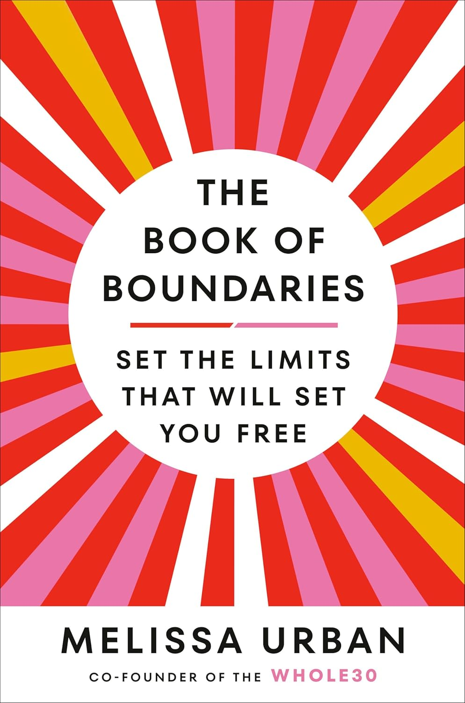

"The Book of Boundaries: Set the Limits that will Set you Free"
- Read on 2025-01-15
- Rating: ️️️️️
- Format: 🎧 (11 hours 11 minutes)
I lead a book club at work. Consequently, I read a fair number of personal/professional development books. Most feel like something that are really unique to the author, with limited elements an average person, like me, is likely to apply to their life/career. I rarely find myself going back to most of them. Unlike those, Melissa Urban has written something that feels much more likely to be referenced. She discusses boundaries in an approachable fashion - and more importantly, in a fashion that can be communicated in a variety of situations and with varying levels of tact. Most of the situations described don't apply to me, but some do, and others might. To me, it feels like a book I'll actually reference in the future. Well done, Melissa.
- Prior: Dinner with the President
- Next: Wind and Truth